Introducción a los cuadernos y las bases de datos
Jupyter Notebooks es una herramienta interactiva que combina código ejecutable, texto explicativo, visualización, y otros elementos en un sólo documento. Es ampliamente usado en ciencia de datos, aprendizaje de máquinas, y análisis computacionales, soporta múltiples lenguajes de programación, siendo Python el más popular. Su interfaz interactiva simplifica la exploración de datos, experimentos, y documentación en tiempo real.
Aquí presentamos las celdas de texto y de código, las cuales tienen diferentes propósitos para organizar y presentar el contenido en los Notebooks:
Conoces Jupyter Notebooks?
Jupyter Notebooks es una herramienta interactiva que combina código ejecutable, texto explicativo, visualización, y otros elementos en un sólo documento. Es ampliamente usado en ciencia de datos, aprendizaje de máquinas, y análisis computacionales, soporta múltiples lenguajes de programación, siendo Python el más popular. Su interfaz interactiva simplifica la exploración de datos, experimentos, y documentación en tiempo real.
Aquí presentamos las celdas de texto y de código, las cuales tienen diferentes propósitos para organizar y presentar el contenido en los Notebooks:
Celdas de texto
- Estas son utilizadas para agregar explicaciones, y descripciones, utilizando formato Markdown o HTML.
- Uno puede insertar títulos, listas, enlaces, ecuaciones, y otros elementos para documentar el trabajo y que sea fácil de comprender (tanto para uno mismo, como para otras personas que quieran usarlos).
- Hacer click en el botón + Markdown en la parte superior de la barra de herramientas.
- Ingresar el texto en la celda utilizando Markdown como formato (ejemplo,# para títulos, ** para texto en negrita, * para itálica).
- Hacer click fuera de la celda o presionar Shift + Enter para renderizar el texto en formato Markdown.
Agregar texto a una celda:
Celdas de Jupyter
Celdas de Código- Estas son usadas para escribir y ejecutar códigos de programación, principalmente en Python.
- Permiten probar algoritmos, manipular datos, y crear visualizaciones, con la salida (output) mostrada directamente abajo del código ejecutado.
- Hacer clic en el botón "+ Code" en la parte superior de la barra de herramientas del notebook para insertar una celda de código bajo la celda en la que se encuentra actualmente (celda activa).
- Ingresar el código en la celda y presionar Shift + Enter para ejecutarlo.
Agregar una Celda de Código:
# Aquí prueba de código en Python
test = 4
Aquí puedo escribir un lindo Aquí puedo *escribir* **un lindo** texto
Notas:
1: Si desea ver páginas web o videos en este Notebook, se debe agregar la siguiente extensión:
Extensión de Google or Extensión de Firefox
2: Si desea crear un Notebook de Colab con un kernel de R, se puede hacer en el siguiente enlace:
Colab con R or Otra forma
Google colaboratory
Google Colab es una plataforma gratis basada en la nube que permite crear, ejecutar, y compartir Jupyter Notebooks directamente en el navegador. Soporta lenguajes como Python y da acceso a poderosos recursos computacionales como GPUs y TPUs, haciéndolo ideal para aplicaciones de ciencia de datos y aprendizaje de máquina.
Adicionalmente, se integra con Google Drive, permitiendo fácil almacenamiento y colaboración en tiempo real.
Exploración de repositorios de ARN de célula única
En esta actividad, exploraremos repositorios y herramientas en línea para analizar datos de ARN de célula única (single-cell RNA-seq) . Consultaremos diversas bases de datos, como el Single Cell Expression Atlas (https://www.ebi.ac.uk/gxa/sc/home), el Human Cell Atlas Data Portal (https://data.humancellatlas.org/), CELLXGENE (https://cellxgene.cziscience.com/), SRA (https://www.ncbi.nlm.nih.gov/sra), GEO (https://www.ncbi.nlm.nih.gov/geo/), (https://panglaodb.se/), CellType (https://celltype.info/), and CellTypist (https://www.celltypist.org/), para descubrir y explorar conjuntos de datos de secuenciación de Single-Cell RNA-seq. Con este ejercicio práctico, aprenderá a acceder, visualizar e interpretar datos de secuenciación de ARN de célula única utilizando recursos en línea.
Objetivos:
- Explorar repositorios y herramientas para datos de scRNA-seq
- Aprender a acceder y visualizar datos de secuenciación de ARN de célula única
- Comprender cómo interpretar datos de secuenciación de ARN de célula única
Nota: Esta actividad está diseñada para completarse de forma autónoma, y usted puede realizar los ejercicios a su propio ritmo.
Single Cell Expression Atlas
El Single Cell Expression Atlas es un repositorio en línea que ofrece acceso a una extensa colección de conjuntos de datos de scRNA-seq provenientes de diversos organismos y tejidos. Este atlas permite a los usuarios explorar y comparar perfiles de expresión génica en distintos tipos celulares, tejidos y condiciones experimentales. Ejercicios prácticos:
1. Explorar la interfaz general del Single Cell Expression Atlas:
- Ingrese al sitio web del Atlas de Expresión de Células Unicelulares. Puede hacerlo desde su navegador habitual o mediante el navegador integrado al final de esta sección en el cuaderno: https://www.ebi.ac.uk/gxa/sc/home
- Una de las ventajas de este repositorio es la diversidad de organismos con datos de secuenciación de célula única disponibles, que incluye especies animales, vegetales, hongos y protistas. Navegue por la página, revise las especies disponibles y seleccione aquella que le interese para profundizar sus conocimientos.
- Explore también los distintos conjuntos de experimentos disponibles, que abarcan Human Cell Atlas, Fly Cell Atlas, Malaria Cell Atlas, COVID-19 Data Portal y las iniciativas discovAIR.
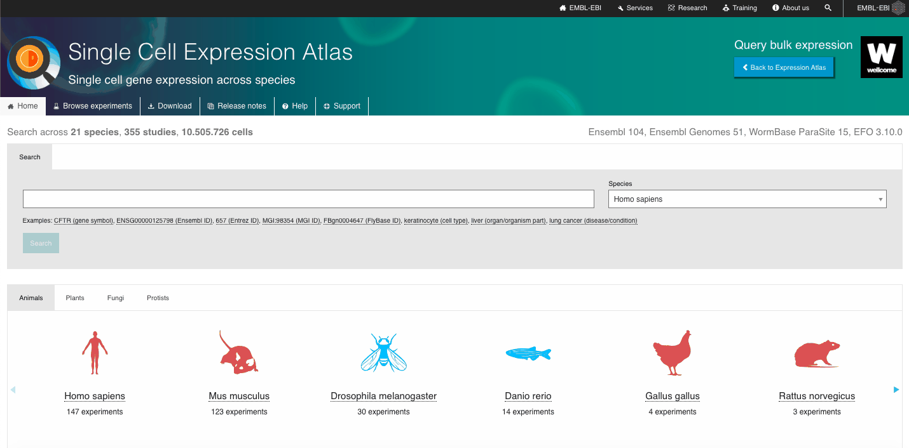
2. Buscar un conjunto de datos de interés:
- Al seleccionar una especie o una colección experimental de interés, accederá a una lista de experimentos asociados a ese organismo o iniciativa.
- Desde allí, podrá filtrar los experimentos según distintas variables, como el reino del organismo, la colección experimental y el tipo de tecnología utilizada. También puede explorar otros criterios, como el título del estudio, los factores experimentales (por ejemplo, parte del organismo, etapa de desarrollo, edad, etc.) y el número de células disponibles.
- Una vez identificado el conjunto experimental de interés, podrá descargar los archivos de cuantificación sin procesar, los archivos de recuento normalizado y el archivo de diseño experimental.


3. Visualizar y explorar los datos disponibles:
- Seleccione un gen o tipo celular de interés y navegue por el visor interactivo, explorando distintos aspectos de los datos disponibles.
- Filtre los conjuntos de datos según criterios como “Tipo celular inferido – Etiquetas de ontología” o “Parte del organismo”.
- Elija un conjunto de datos relevante y explore toda la información disponible.
- Examine los perfiles de expresión génica mediante gráficos interactivos (por ejemplo, t-SNE, mapas de calor).
- Consulte los marcadores genéticos y aproveche otras funcionalidades destacadas del repositorio.


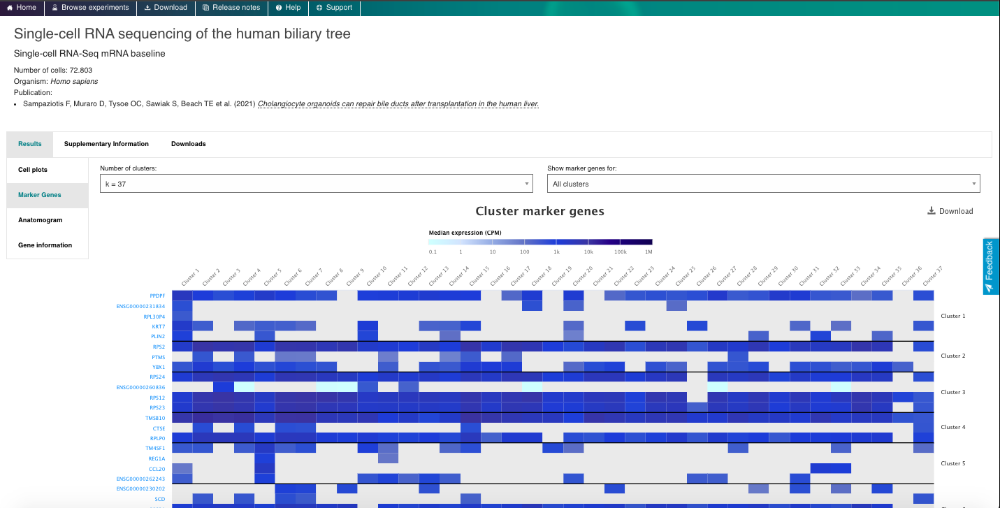


4. Ahora disfruta del repositorio, experimentando con los datos y genes que te interesan. Puedes usar el navegador integrado (disponible a continuación) o el navegador principal de tu ordenador: https://www.ebi.ac.uk/gxa/sc/home
Human Cell Atlas Data Portal
Breve descripción:El Portal de Datos del Atlas de células humanas (Human Cell Atlas (HCA) Data Portal) es un repositorio en línea que ofrece acceso a una extensa colección de conjuntos de datos de célula única y transcriptómica espacial provenientes de diversos tejidos y tipos celulares humanos. Este portal constituye el repositorio principal de la iniciativa Human Cell Atlas y permite a los usuarios explorar, visualizar y analizar perfiles de expresión génica en distintos tipos celulares, tejidos y condiciones experimentales generados por el consorcio.
Ejercicios prácticos:
1. Explore the General Portal Interface:
- Explorar la interfaz general del portal: Ingrese al sitio web del Portal de Datos del Atlas de Células Humanas: https://data.humancellatlas.org/
- Explore la funcionalidad general del sitio, revise los datos disponibles y consulte cómo contribuir con nuevos conjuntos de datos.


2. Buscar y explorar un conjunto de datos de interés:
- Explore los conjuntos de datos disponibles navegando por las secciones de Proyectos, Muestras y Archivos. Utilice los filtros integrados para realizar una búsqueda más específica.
- Una vez seleccionado un conjunto de datos, acceda a las pestañas de Resumen, Metadatos, Matrices, Descarga y Exportación.
- Verifique si el conjunto permite una exploración más detallada a través de otros portales de análisis, como UCSC Genome Browser o CELLXGENE.
- Compruebe si los datos disponibles pueden exportarse a la plataforma en la nube Terra. Tenga en cuenta que se trata de una solución privada de terceros.
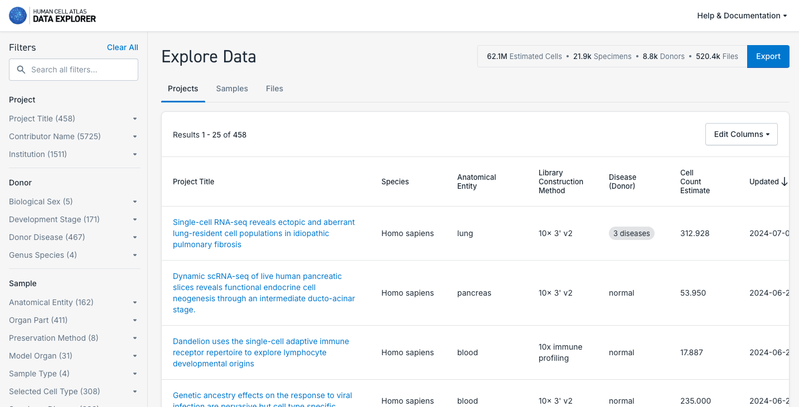

3. Buscar y explorar atlas de redes biológicas:
- Tenga en cuenta que cada red incluye conjuntos de datos específicos, aunque actualmente solo están disponibles los atlas unificados del pulmón y del sistema nervioso.
- Recorra las distintas red y examine los datos y atlas disponibles en cada una.
- Analice las características de los componentes del atlas, como el número de tejidos representados, el estado de salud o enfermedad, el recuento celular, y la posibilidad de explorarlos en mayor profundidad mediante CELLxGENE o descargando los datos directamente.
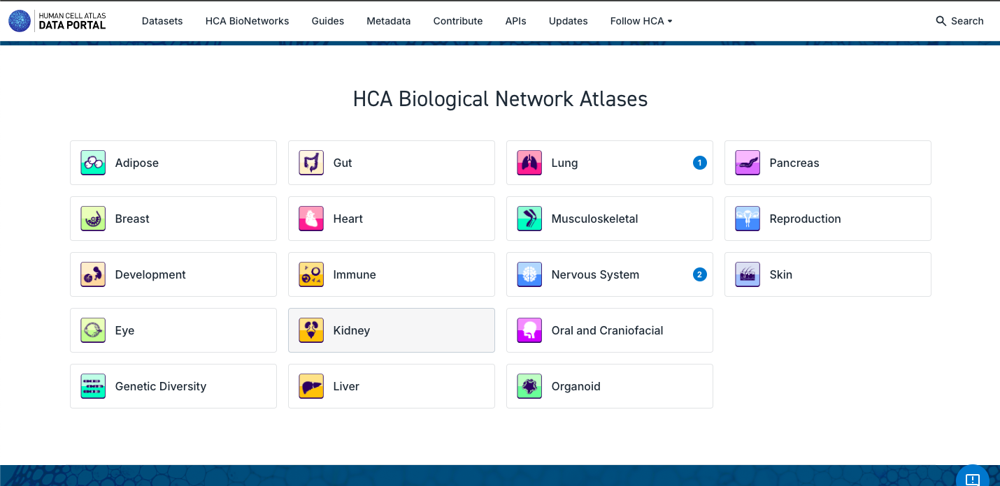


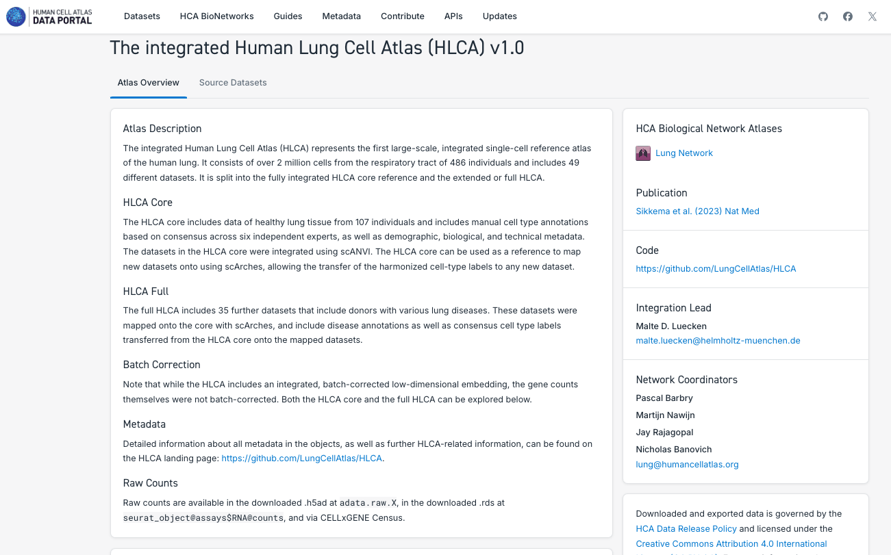
4. Explore las guías disponibles para saber más sobre todas las funcionalidades y diferentes aspectos del Portal de Datos de HCA:

5. Ahora disfruta del repositorio, experimentando con los datos y genes que te interesan. Puedes usar el navegador integrado (disponible a continuación) o el navegador principal de tu ordenador: https://data.humancellatlas.org/
CellxGENE
Breve descripción:CELLxGENE es un portal web desarrollado por la Iniciativa Chan Zuckerberg (CZI) que permite la exploración y el análisis interactivo de datos de secuenciación de ARN de célula única . Ofrece una interfaz intuitiva para visualizar y comparar perfiles de expresión génica en distintos tipos celulares, tejidos y condiciones fisiopatológicas.
Ejercicios prácticos:
1. Explorar la interfaz general del portal:
- Acceda al sitio web de CELLxGENE: https://cellxgene.cziscience.com/
- CELLxGENE incluye diversas herramientas que permiten explorar y analizar datos de ARN de célula única con mayor profundidad.
- Revise las colecciones y conjuntos de datos disponibles, y seleccione uno de interés para una exploración más detallada. Puede utilizar la opción “Filtros” para seleccionar datos según distintos criterios (por ejemplo, tipo celular, enfermedad, etnia declarada, sexo).
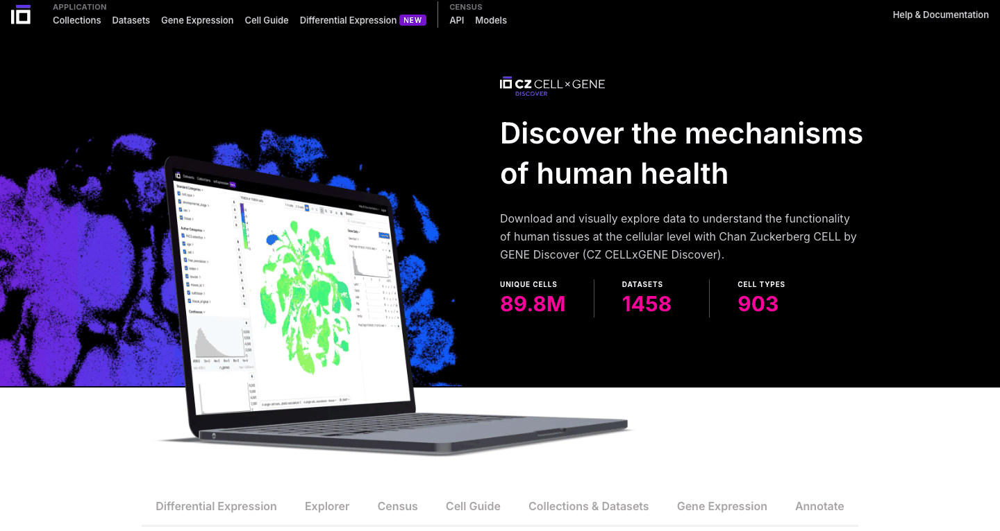


2. Explorar un conjunto de datos de interés:
- Explore las distintas características disponibles. Active la visualización por colores para cada célula según categorías como tipo celular, etapa de desarrollo, etnia, sexo, enfermedad (si está disponible), entre otras.
- Interactúe con las células, explore los distintos tipos de gráficos disponibles y obtenga visualizaciones personalizadas según sus preferencias.
- Seleccione dos grupos celulares de interés para identificar los genes con mayor expresión diferencial. Puede hacerlo según criterios como tipo celular, sexo, estado de enfermedad, etc. Aplique un color distintivo a uno de los genes con expresión diferencial relevante.
- Experimente con las distintas funcionalidades para profundizar en el análisis de su conjunto de datos seleccionado.

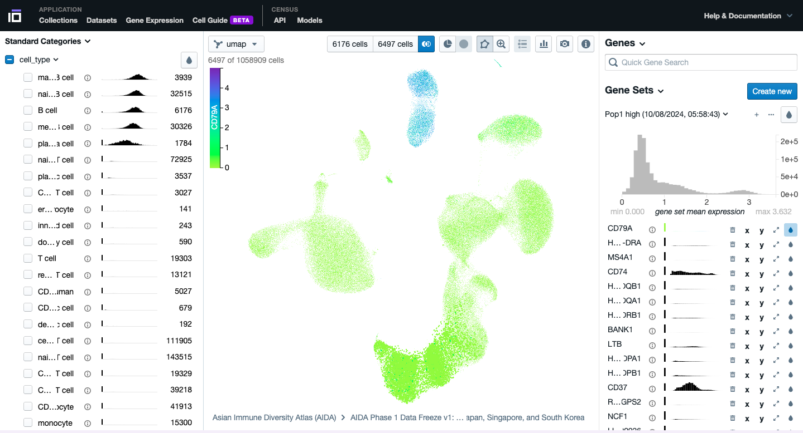
3. Explore el Gene Expression Functionality:
- Seleccione el conjunto de datos de interés según los filtros; agregue una lista de interés y visualice su expresión en diferentes tipos de células.
- Explore el gráfico, observando los niveles de expresión y el porcentaje de células que expresan ese gene.
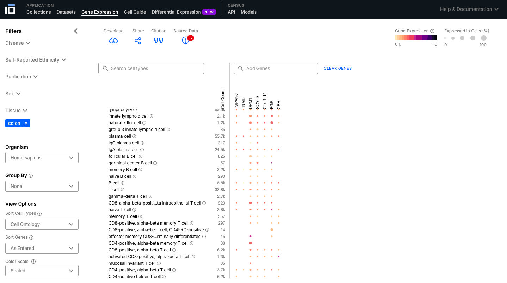
4. Explore Cell Guide Functionalitys:
- Seleccione una célula o tejido de interés y explore su ontología.
- Las células pueden tener diferentes subtipos, por lo que se clasifican según una ontología.
- Una ontología celular (LC) es un marco estandarizado para describir y categorizar los tipos de células según sus características, funciones y relaciones. Proporciona un lenguaje común y un conjunto de términos para definir y anotar los tipos de células en diferentes especies, tejidos y conjuntos de datos.
- Explore la célula o tejido de interés, explorando su descripción, ontología, genes marcadores y datos disponibles.
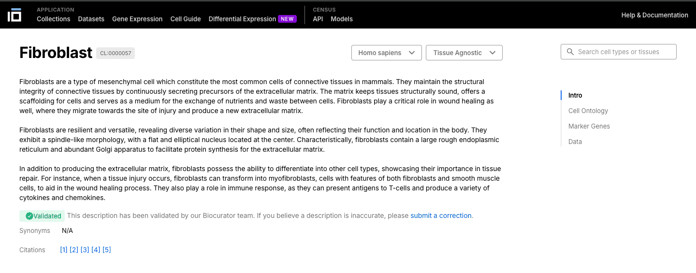

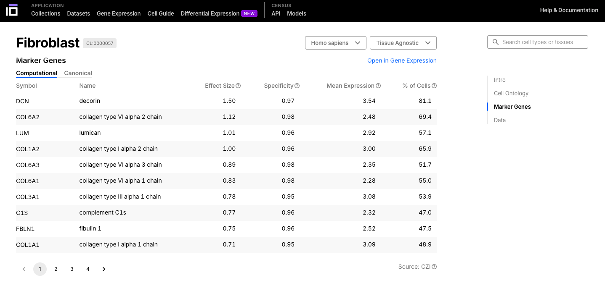
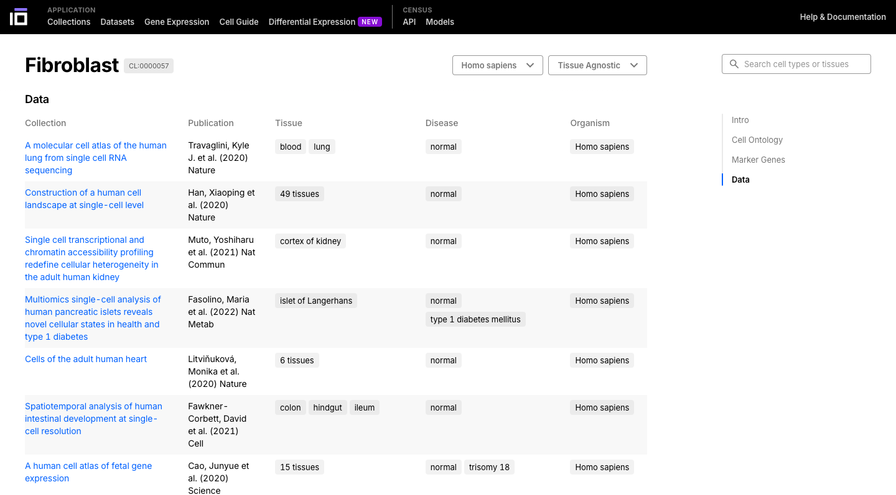
5. Explore Differential Expression Functionality:
- Seleccione los grupos para los cuales desea realizar un análisis de expresión diferencial, según el organismo, tejido, tipo celular, enfermedad, etnia, sexo, entre otras opciones disponibles.
- En este ejemplo, se identificaron los genes con expresión diferencial según el sexo en células B del colon.

6. Explore el CELLxGENE Census:
- Familiarícese con la plataforma Census, que permite acceder, consultar y analizar todos los datos de célula única disponibles en CELLxGENE.

7. Explore el censo de CELLxGENE:
- Ahora disfruta del repositorio interactuando con los datos y genes que te interesan. Puedes usar el navegador integrado (disponible a continuación) o el navegador principal de tu ordenador:
Panglao DB
Breve descripción:PanglaoDB es una base de datos diseñada para la comunidad científica interesada en explorar experimentos de célula unica en ratones y humanos. Recopila y integra datos provenientes de múltiples estudios y los presenta mediante una plataforma unificada. Aunque actualmente se encuentra descontinuada, sigue siendo una herramienta valiosa para la exploración de genes marcadores.
Ejercicios prácticos:
1. Explorar la interfaz general del portal:
- Acceder al sitio web de PanglaoDB: https://panglaodb.se/
- Navegue por las opciones de búsqueda para explorar el repositorio.
- Evalúe la expresión de genes específicos de interés.
- También puede explorar marcadores celulares para el tipo celular de interés
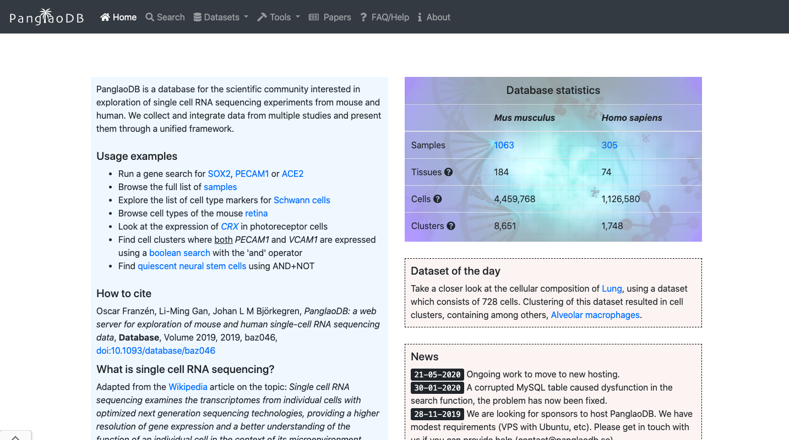

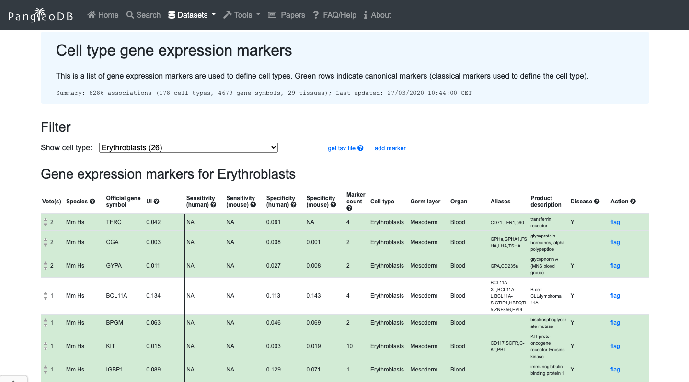
2. Ahora disfruta del repositorio, experimentando con los datos y genes que te interesan. Puedes usar el navegador integrado disponible a continuación o el navegador principal de tu ordenador: https://panglaodb.se/
CellTypist
Breve descripción:CellTypist es una plataforma web diseñada para facilitar la identificación, clasificación y anotación de tipos celulares. Ofrece una interfaz intuitiva para que los investigadores anoten y clasifiquen tipos celulares en sus propios datos.
Ejercicios prácticos:
1. Explorar la interfaz general del portal:
- Acceder al sitio web de CellTypist: https://www.celxltypist.org/
- Explorar la enciclopedia disponible. Explorar un grupo de células de interés con mayor profundidad.
- En "Recursos", explorar los modelos disponibles; explorar los órganos disponibles y acceder al paquete de Python.
- En la página "Inicio", explorar la herramienta automática para anotar sus propios datos.
- Acceder a los tutoriales disponibles para profundizar en las funciones de la plataforma.


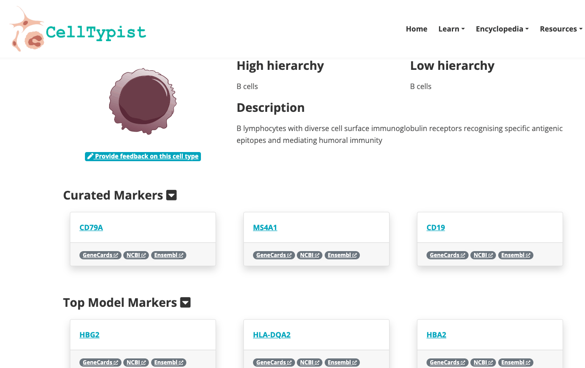
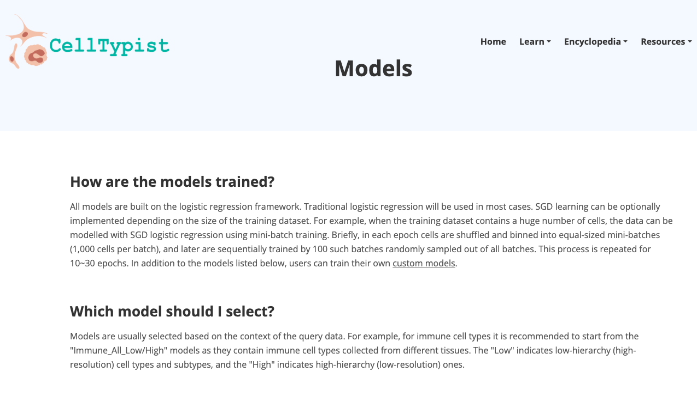

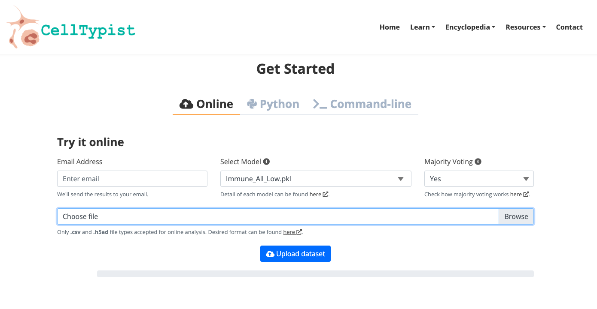
2. Ahora disfruta de la plataforma, experimentando con los datos y genes que te interesan. Puedes usar el navegador integrado disponible a continuación o el navegador principal de tu ordenador: https://www.celltypist.org/
GEO (Gene Expression Omnibus)
Breve descripción:GEO es una base de datos pública integral que archiva y distribuye gratuitamente datos genómicos funcionales de microarrays, secuenciación de nueva generación y otros métodos de alto rendimiento. Es un recurso invaluable para los investigadores, ya que apoya el descubrimiento de nuevos conocimientos sobre la función, regulación y expresión génica, y facilita la reutilización de datos.
Ejercicios prácticos:
1. Explorar la interfaz general del portal:
- Acceder al sitio web de GEO: https://www.ncbi.nlm.nih.gov/geo/
- Buscar un conjunto de datos de interés, utilizando, por ejemplo, las siguientes palabras clave: "single cell heart (corazón célula única)"
- Explorar conjuntos de datos públicos relacionados con experimentos de single cell heart (o relacionados con las palabras clave utilizadas). Seleccionar uno para obtener más información sobre ese estudio.
- Explorar las muestras disponibles.
- Evaluar si se siguieron los principios FAIR al depositar los datos.


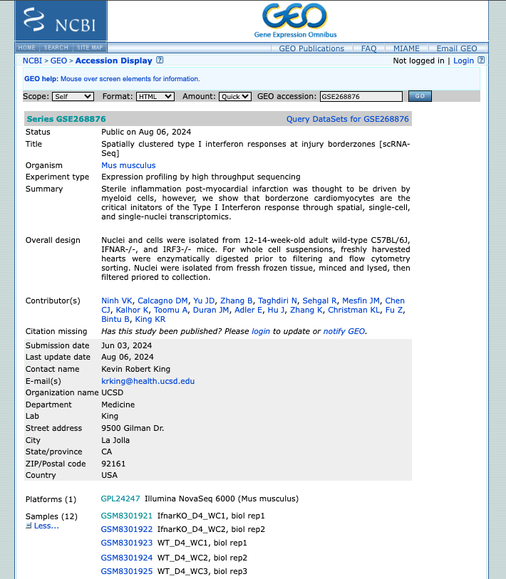

2. Now enjoy the repository, by playing with the datasets of interest. You can use the embedded browser available below, or the main browser from your computer: https://www.ncbi.nlm.nih.gov/geo/
SRA (Sequence Read Archive)
Breve descripción:El SRA es una base de datos pública integral que archiva y distribuye gratuitamente datos de secuenciación de alto rendimiento, incluyendo secuenciación de ARN, secuenciación de ADN y otras formas de datos de secuenciación de próxima generación (NGS).
Ejercicios prácticos:
1. Explorar la interfaz general del portal:
- Acceder al sitio web del SRA: https://www.ncbi.nlm.nih.gov/sra
- Buscar un conjunto de datos de interés, utilizando, por ejemplo, las siguientes palabras clave: "single-cell heart"
- Filtrar los resultados según la fuente, la plataforma de secuenciación, el organismo de interés u otros recursos disponibles.
- Explorar conjuntos de datos públicos relacionados con experimentos de corazón (o relacionados con las palabras clave utilizadas). Seleccionar uno para obtener más información sobre ese estudio.
- Explorar las muestras disponibles.
- Evaluar si siguieron los principios FAIR al depositar sus datos.


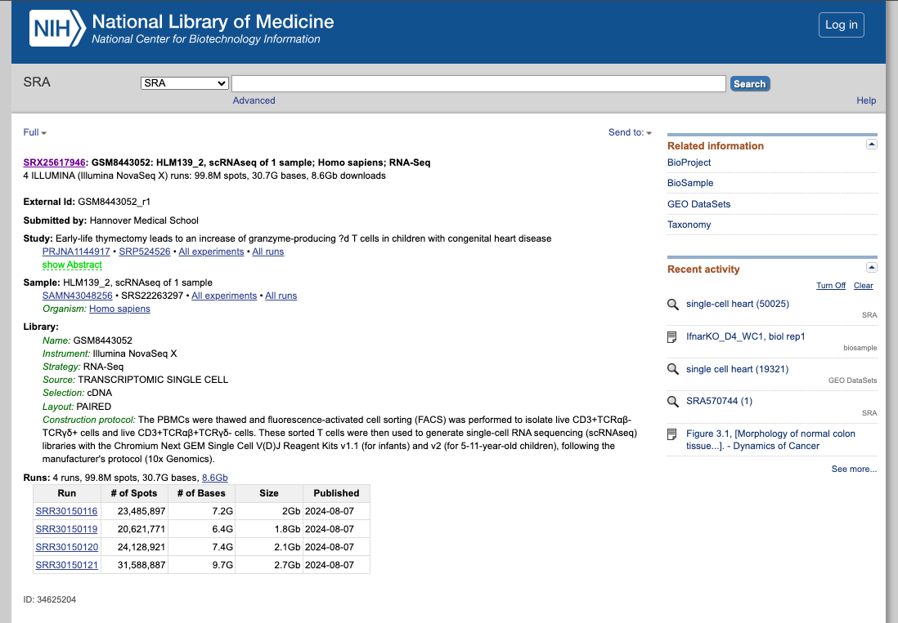
2. Ahora disfruta del repositorio, experimentando con los conjuntos de datos que te interesan. Puedes usar el navegador integrado disponible a continuación o el navegador principal de tu ordenador: https://www.ncbi.nlm.nih.gov/sra
NOTA:
Además, existe SRA Explorer, una herramienta interactiva de visualización de datos de SRA que facilita la navegación y el acceso a los datos sin procesar almacenados en el SRA, lo que permite una búsqueda y descarga de datos eficiente.